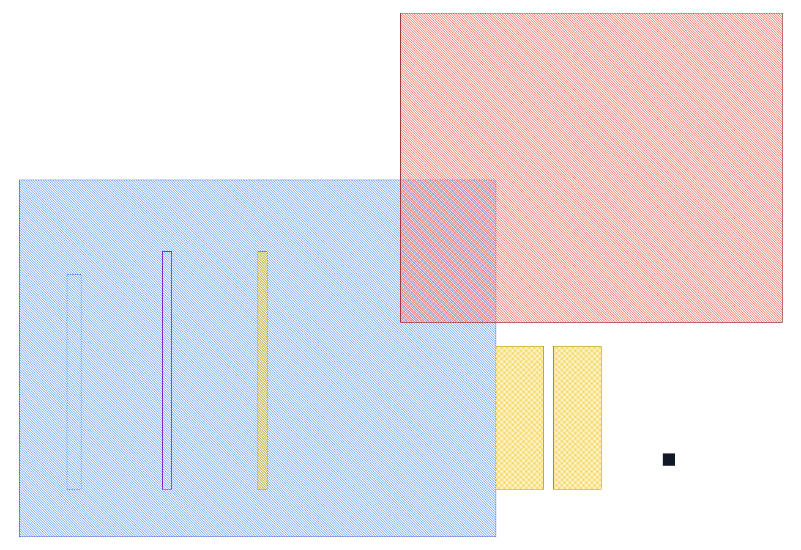

第 11 章 DRC 实验与 LVS、PEX 入门
不背规则缩写；从实际 GDS、单位、边和报告建立验证闭环
- 能把宽度、间距、包围、包含、栅格与天线规则画成几何问题。
- 会核对 GDS DBU、层号、规则注释和实际表达式，不把 deck 当成不会出错的黑盒。
- 能运行仓库内的 KLayout 教学 DRC，查看结果数据库并按规则族定位根因。
- 知道 DRC、LVS、ERC、PEX 各能证明什么，以及为什么库还要做相邻拼接验证。
11.1 先分清四个问题
| 检查 | 输入/比较对象 | 主要发现 | 不能单独证明 |
|---|---|---|---|
| DRC | 版图几何 vs 规则 deck | 宽度、间距、包围、面积、密度、栅格、天线等违规 | 逻辑连接正确、功能和时序正确 |
| ERC | 提取网络 vs 电气约束 | 悬空阱/衬底、非法电源连接、过压等 | 全部制造几何规则 |
| LVS | 版图提取网表 vs 参考 CDL/SPICE | 开路、短路、端口、器件类型/数量/参数不匹配 | 寄生后性能、可制造性和引脚可接入性 |
| PEX | 已确认连接的版图网络 | 互连 R/C、耦合、器件寄生 | 参考网表本身正确、模型覆盖所有效应 |
版图生成 → DRC ─┐
├→ LVS → PEX → 版图后仿真/特征化
参考 CDL ────────┘
ERC 可在提取网络上并行/穿插执行删除一只 Via 可能留下完全合法的几何，因此 DRC 可通过而 LVS 报开路；两块不同网络的 M1 太近则可能 DRC 先报间距。先判断问题属于几何还是连接，调试才不会乱。
11.2 用本地 FreePDK45 做输入审计
本章的事实来自 examples/FreePDK45，而不是参考教程中写下的二手结论。先看四类文件：
| 文件 | 回答的问题 | 本章用法 |
|---|---|---|
gds/*.gds | 实际图形、层号、层次和 DBU 是什么？ | KLayout/脚本读取 |
calibre/layer.inc | 层名怎样映射到 GDS layer？ | 建立显示与规则映射 |
calibre/calibreDRC.rul | SVRF 表达式真正检查什么？ | 规则源码审计 |
NangateOpenCellLibrary.cdl | 参考电路与端口是什么？ | LVS 与下一章电路对照 |
实际层映射
| 层 | GDS layer | 在本库单元中的作用 |
|---|---|---|
| Active / P-well / N-well | 1 / 2 / 3 | 源漏与沟道所在区域、NMOS/PMOS 体区 |
| N-implant / P-implant | 4 / 5 | 区分 N 型与 P 型扩散 |
| Poly / Contact / Metal1 | 9 / 10 / 11 | 栅极、层间接触和单元内部连线/引脚 |
| Via1…Via9 | 12、14…28 | 连接相邻金属层；本批逐单元 GDS 实际未使用 |
| Metal2…Metal10 | 13、15…29 | PDK 规则有定义；本批标准单元 GDS 实际未使用 |
| 235/0、63/63 | 不在 layer.inc | 该库额外的单元标记/边界数据，不能擅自当制造层 |
DBU 与栅格：先算，不猜
用本机 KLayout Python API 读取 GDS，得到 dbu = 0.0001 μm = 0.1 nm：
python3 - <<'PY'
import klayout.db as kdb
ly = kdb.Layout()
ly.read("examples/FreePDK45/gds/INV_X1.gds")
print(ly.dbu) # 0.0001 μm
print(ly.top_cell().dbbox()) # 以 μm 表示的边界框
PY而 deck 中 Grid.* 的注释写“2.5 nm grid”，表达式却是 OFFGRID ... 5 5，同时又启用了 LAYOUT USE DATABASE PRECISION YES。按该 GDS 的数据库精度，5 DBU 是 0.5 nm，并非 2.5 nm。这不是让你替 PDK 猜一个答案，而是提醒：注释、deck 语义、运行选项与输入数据库必须通过工具结果和原始工艺文档共同确认。
11.3 从图形到规则：六个基本动作
| 几何问题 | SVRF 例子 | 读法 | 常见根因 |
|---|---|---|---|
| 最小宽度 | INTERNAL metal1 < 0.065 | M1 内部距离小于 0.065 μm | 窄颈、短 stub、布线宽度错误 |
| 最小间距 | EXTERNAL metal1 < 0.065 | 分离 M1 边之间太近 | 轨道太密、拐角、邻网挤压 |
| 包围量 | ENCLOSURE contact active < 0.005 | Active 对 Contact 的余量不足 | 孔靠边、对准裕量不足 |
| 完全包含 | NOT via1 metal1 | Via1 有部分落在 M1 外 | 缺少上/下金属或孔偏移 |
| 禁止重叠 | AND nwell pwell | N-well 与 P-well 交集非空 | 区域定义或边界合并错误 |
| 栅格 | OFFGRID poly 5 5 | 顶点不在指定数据库栅格 | 单位换算、缩放、布尔运算舍入 |
INTERNAL/EXTERNAL 不是简单读取矩形短边或两个 bounding box 的距离。真实检查针对边，凹角、投影长度、相交/共边、连接关系和测量方式都会影响结果。不要自己写一个 bbox 比较就称作 DRC。
派生层把“物理含义”变成几何
well = nwell OR pwell
gate = poly AND active
fieldpoly = poly NOT active
contactenc1 = active OR poly
contactenc = contactenc1 AND metal1gate 是 Poly 与 Active 的交集，代表沟道/栅区；fieldpoly 是未跨 Active 的场区 Poly。于是 deck 能分别规定 gate 间距与 field-poly 间距。注意这只是二维掩模推导；器件类型还要结合阱、注入和体连接。
对边包围与宽度相关间距
接触孔周围的金属可能允许“两条对边给足余量、另两边较小”，所以 deck 使用 RECTANGLE ENCLOSURE ... GOOD ... OPPOSITE，不能粗暴翻译为四边相同的 enclosure。宽金属间距则通过 SIZE ... UNDEROVER、AND、COINCIDENT EDGE 和 LENGTH 筛出满足宽度/边长条件的边，再施加更大 EXTERNAL。核心思路是：
原始金属 → 筛出宽区域 → 找与原图共边的边 → 按边长筛选 → 检查更大间距这类规则最容易在跨工具翻译时失真，因为不同引擎对边、投影、端点和相交的定义未必一一对应。必须用 pass/fail 测试图形做等价性回归。
连通性与天线不是纯局部几何
CONNECT metal1 poly BY contact
CONNECT metal2 metal1 BY via1
NET AREA RATIO metal1 poly gate diode > 300 ...天线检查需要先构造网络，再比较制造阶段中连接到 gate 的导体面积与栅面积。规则还可能考虑保护二极管、累积层级和工艺顺序。它不能靠“最长导线是多少”替代，且不同工艺的累计模型不可照搬。
11.4 批判性读本地 deck：四个真实案例
| 位置 | 观察 | 应采取的动作 |
|---|---|---|
Via2.1/.2、Via3.1/.2 | 注释写宽 0.07、间距 0.085 μm，表达式仍检查 0.065、0.075 μm | 以规格/测试结构核对，不凭规则名或注释选值 |
Metal4.3 等 | 注释说 Metal4 包围 Via3，表达式参数次序与前文规则模式不一致 | 制作四边余量 pass/fail 图，检查引擎真正标记哪条边 |
Grid.* | 注释的 2.5 nm 与实际 GDS DBU、参数 5 不直接吻合 | 记录输入 DBU、deck 精度选项和 marker 坐标 |
| 库视图 | CDL 有 135 个子电路，逐单元 GDS/LEF 各 134 个；TAPCELL_X1 仅在 CDL 中 | 发布前做 cell/pin/层清单差集，不能只跑某个逻辑单元 |
11.5 KLayout 可执行 DRC 实验
仓库提供两个可复现文件：
examples/FreePDK45/klayout/make_drc_fixture.rb：生成故意含错的 GDS；examples/FreePDK45/klayout/freepdk45_teaching_subset.drc：翻译语义明确的宽度、间距、包含和井重叠规则。
klayout -b \
-r examples/FreePDK45/klayout/make_drc_fixture.rb \
-rd output=/tmp/freepdk45-drc-fixture.gds
klayout -b \
-r examples/FreePDK45/klayout/freepdk45_teaching_subset.drc \
-rd input=/tmp/freepdk45-drc-fixture.gds \
-rd report=/tmp/freepdk45-drc-fixture.lyrdb
klayout /tmp/freepdk45-drc-fixture.gds \
-m /tmp/freepdk45-drc-fixture.lyrdb \
-l examples/FreePDK45/freepdk45.lyp
打开 Results Database 后，不要只看 marker 数量。逐项确认：
- 规则 ID 是否正是预期的
Active.1、Poly.1等； - marker 指向哪两条边，距离由哪个方向量得；
- 刚好等于阈值时 pass 还是 fail（
<与<=）； - 旋转、镜像、凹角、短边和层次实例后结果是否保持；
- 修正一类违规后是否引入另一类 spacing/enclosure 违规。
RECTANGLE ENCLOSURE、宽度相关边规则、OFFGRID 和天线规则。正确做法是为每个复杂语义建立双工具测试集，再比较 marker，而不是让相似的 API 名称制造虚假信心。11.6 如果本机有 Calibre：用包装 deck 固定输入
本地 calibreDRC.rul主要是层与检查规则，没有在文件头固定你的 GDS 路径和 top cell。工程中通常建立包装文件（路径仅为示意）：
LAYOUT SYSTEM GDSII
LAYOUT PATH "/absolute/path/INV_X1.gds"
LAYOUT PRIMARY "INV_X1"
DRC RESULTS DATABASE "/tmp/INV_X1.drc.results" ASCII
DRC SUMMARY REPORT "/tmp/INV_X1.drc.summary"
INCLUDE "/absolute/path/calibreDRC.rul"calibre -drc /tmp/INV_X1-wrapper.rul实际命令、许可证、结果格式与运行选项以安装版本和 PDK 文档为准。本教程当前环境未用 Calibre 执行这份 deck，因此不会把 KLayout 子集结果冒充 Calibre 结果。正式回归还应记录工具版本、deck checksum、宏定义、LAYOUT PRIMARY、层次/flat 选项、线程数和 waiver。
11.7 如何从一千个 marker 找到一个根因
- 按 rule ID 和层聚类：先看有多少规则族，不按坐标随机点。
- 区分层次：单元内部、单元边界、实例拼接、顶层布线分别处理。
- 找第一个生成原因：技术值错误、形状构造错误、布线选择错误，还是缺少后处理。
- 最小化复现：把问题裁成只含必要层的 pass/fail 对照，保留原 DBU。
- 建立自动回归：固定期望规则 ID 和 marker 数；同时增加应当通过的反例。
- 全量复跑：局部 clean 后再跑 cell、拼接矩阵和库级测试。
例如大量 Contact.4 通常不是逐孔手改，而是统一的接触孔 enclosure 参数、坐标舍入或 active 合并逻辑有问题。marker 是症状，生成器参数/算法才是根因。
11.8 从两只管到 LVS：缺一个 Contact 会发生什么
你已能从 INV 版图认出两只 MOS，现在把肉眼追踪变成提取步骤。以下是工作原理示范，不是本教程已执行了 foundry LVS/PEX；本章可运行的部分是前面的 KLayout 教学 DRC。KLayout 的真实 LVS 流程可核对官方 LVS 入门。
- 根据 Active、栅、井/注入等层识别 NMOS/PMOS；不是所有 Poly 都是器件。
- 按提取规则切分源漏区域、提取 W/L，并识别体端。
- 沿合法接触孔和金属连接合并网络，为 MOS 的 D/G/S/B 分配网络。
- 把提取后的器件网络与参考 CDL 比较；内部自动网名可以不同，拓扑和要求比较的参数必须等价。
| 版图状态 | 参考网表期望 | 提取可能得到什么 | 应该怎么理解 |
|---|---|---|---|
| 正确 INV | 两只 MOS 的 D 都在 ZN | 同一输出网络连接 PMOS D、NMOS D、ZN 端口 | 本项连通性匹配；仍须检查其他端口、器件参数与体端 |
| 输出支路唯一一个 Contact 缺失，且无替代连接 | NMOS D 也应接 ZN | NMOS D 留在另一张孤立网络上 | 这是开路；图形可能都够宽，却连接不对 |
| 把 ZN 金属误接到 VSS | ZN 与 VSS 是两张不同网络 | 提取时合成同一网，输出被接地 | 这是短路；不靠把 net 名改回去修复 |
| 网络正确，但 NMOS W 从 0.415 变成 0.210 µm | 指定器件尺寸 | 拓扑一样、器件参数不符 | 是否报错取决于 LVS 参数比较配置，不能只看管数相同 |
同样，DRC 报告为空不是充分证据：先确认读到了目标 top、关键输入层非空、预期规则确实启用，且一个已知违规的负例会被抓到。把 input 层号写错，可能“零违规”只是检查了空图层。
练习：LVS 报网名 net_17 与参考 net_0 不同，一定错吗？
不一定。内部网名通常可以重命名匹配，关键是对应器件端子形成的网络是否一致；顶层端口如何对应则取决于 setup。应看比较报告的开路/短路/器件参数证据，不能只比较网名字符串。
11.9 LVS 调试顺序
参考 CDL ── 名称/参数规范化 ───────────────┐
├─ 图与器件比较 → 报告
GDS ── 派生层 → 器件识别 → 网络提取 ─────┘- 接口：cell 名、pin 名/大小写/方向、电源名是否一致？
- 器件：MOS 数量、NMOS/PMOS/阈值类型是否一致？
- 开短路：Contact/Via 是否缺失，两个网络是否意外合并？
- 体端：well、substrate、tap 是否接到正确电源？
- 参数归并：W/L、finger、并联/串联归并与容差是否一致？
lclayout/lvs/lvs.py 会丢弃第 4 个 body 端子，提取层能力也有限。它适合早期连接回归，不能代替目标 PDK 的外部 LVS/ERC。11.10 PEX 为什么在 LVS 以后仍有工作要做
参考 CDL 把 ZN 当作等电位的一根理想线。PEX 会把实际金属/接触孔的电阻、对地和耦合电容带入电路；一根网可能被分成多个经电阻相连的内部节点。这些新增节点不是凭空多出来的逻辑输入。
用单极点教学近似：输出等效电阻 2 kΩ、负载 10 fF，RC=20 ps，理想阶跃下 50% 响应时间约 0.693RC=13.86 ps。若附加寄生电容 5 fF，总电容 15 fF，则约为 20.79 ps。这里故意忽略晶体管非线性、输入 slew、分布电阻和耦合，只是解释方向，不是该 INV 的 PEX 测量。实际表征必须仿真提取网表。
LVS 主要回答“电路是否与参考对应”，PEX 回答“连接的非理想电气参数是什么”。这也是为什么通过 LVS 的版图，时序仍可能比原理图仿真慢。
11.11 PEX 与库级拼接
PEX 应在连接已由 LVS 确认后进行。标准单元需要关注输出扩散/互连电容、输入栅与布线电容、内部节点电容、金属/扩散电阻和耦合；模型与 PVT corner 必须配套。
单个 cell DRC clean 仍不够。真实 row 中存在紧密相邻和镜像，至少应覆盖：
- 每个 cell 与自身、最窄/最宽 cell 的左右拼接；
- 合法方向的 R0/R0、R0/MX、MX/R0、MX/MX；
- 逻辑单元与 filler、tap、endcap、antenna 单元组合；
- 上下 row 的电源轨、well/implant 连续性及间距。
选择 Metal1.1，生成宽度为 0.0649、0.0650、0.0651 μm 的三条 M1；再旋转 90° 并放进子 cell 实例。记录实际坐标量化后的宽度和 marker。这个实验会同时暴露阈值比较、DBU 舍入、方向和层次处理。
- 规则注释和表达式数值不一致时，为什么不能任选一个？
- 删除 Via 后 DRC 可能通过而 LVS 失败，说明两者分别检查什么？
- 为什么跨工具翻译宽度相关间距规则必须比较 marker，而不能只比较代码长得像不像？
- 为什么单元拼接 DRC 是库签核的一部分？
参考答案
注释不是可执行规范，表达式也可能写错，必须回到原始工艺规格和 pass/fail 测试。DRC 检查存在的几何是否合法，LVS 检查提取连接/器件是否匹配参考。复杂规则依赖边语义和测量选项，相似 API 不保证等价。标准单元在芯片中必然相邻和镜像，边界组合会出现单 cell 内不存在的井、间距、凹槽和连续性问题。
calibreDRC.rul、layer.inc、FreePDK45 GDS/CDL，以及 calibre_drc_tutorial.md 中关于基本几何操作、派生层、可变间距和天线的可复用部分。未采用其中专有工艺内容、未经本地文件验证的数值结论和不严谨剖面示意。